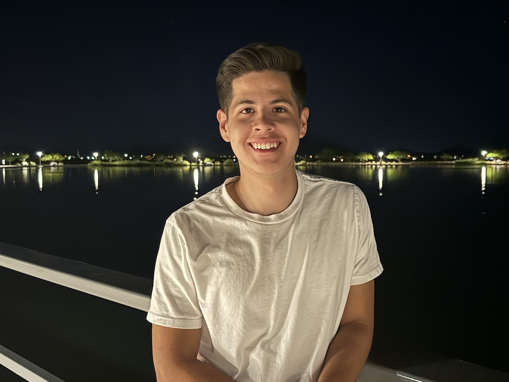

Moroni Montoya Bernal
I’m a computer science freshman at BYU-Idaho, where I’m eagerly pursuing a future in technology and software development. I’m particularly drawn to programming because it’s a field that combines creativity, logic, and continuous learning. I’m certified in both Python and C#, and my coursework has been a rewarding dive into the fundamentals of software engineering. My goal is to grow my expertise and eventually contribute to fields like aerospace technology, where I hope to help further space exploration. With a diploma from Higley High School and additional training in computer programming from the East Valley Institute of Technology, I’m building a strong foundation for a career in technology. I’m always eager to connect with others in the field and explore new learning opportunities, both academically and personally.
Bilingual
I was born and raised in Hermosillo, Sonora, Mexico. I grew up speaking spanish and when I was 13 years old my family and I moved to the US, where I learned english and became bilingual. This has given me a unique perspective on communication and problem-solving, and has allowed me to use the skills I gained from learning a new language, to implement that into learning new computer languages.
Communicative
I had the opportunity to serve a 2 year mission for my church in Los Angeles, California where I taught people the Gospel of Jesus Christ in spanish. As a missionary, I had a partner every hour of the day, and I had to learn to communicate effectively to accomplish the goals we had set for the day/week/month. Although it was hard sometimes, I learned to listen to others, and work with others to reach a solution.
Creativity
Outside of academics, I have a range of hobbies that keep me balanced and inspired. I enjoy playing guitar, and photography which challenge me to think creatively, pay attention to details and stay focused. Hiking and fishing allow me to spend time outdoors, where I can unwind and get a fresh perspective. Each of these activities complements my programming work by helping me approach problems with patience and creativity.